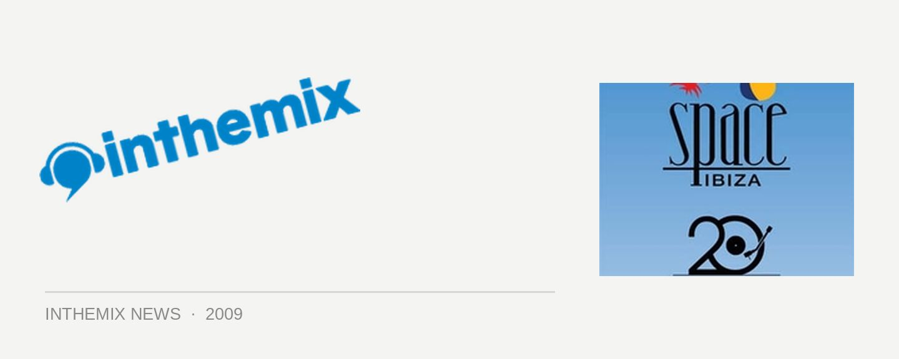

Space Ibiza NYD unleash second-round lineup
Sydney-siders were pleasantly surprised earlier this month when they were offered another excellent option for where to party on New Years Day, with the rather tasty looking debut of the Space Ibiza brand on our shores. Last week the organisers revealed the impressive first-round selection of international and local talent that have been rounded up to play at the event, including BBC1 kingpin Pete Tong as well as Tiefscharwz, Derrick Carter, D Ramirez and more. Barely giving us a chance to take a breath, the second-round lineup of acts has now been announced.
The party will be presented by local promoters Paul Strange Presents and they’ll be taking over the Show Ring of the Fox Studios Entertainment Quarter, and it’ll represent the first time the area has ever been used for such an event. Rather than being a stock-standard NYD party, we’ve been promised the authentic Space experience. Stilt walkers, dancers, acrobats and other such craziness, set to capture the vibe of the club’s home in Ibiza.
Space Ibiza 20th Anniversary – New Years Day 2010 second-release release lineup:
Smokin Jo
Malente
Acid Mondays (20:20)
Alex Wolfenden
Ben Korbel
Alex Taylor
Mo’Funk
AJAX
Bang Gang
Tommy Trash
Garry Todd
Matt Cahill
Ben Morris
Matt Nukewood
Liam Sampras
Joining the existing crew of performers…
Pete Tong
Tiefscharwz
Sam Sparro
Derrick Carter
MYNC Project
Christian Burkhardt
D Ramirez
Jonathan Ulysses
The Potbelleez (live)
Van She (live)
Camillo Franco (space resident)
DJ Villeneuve (space resident)